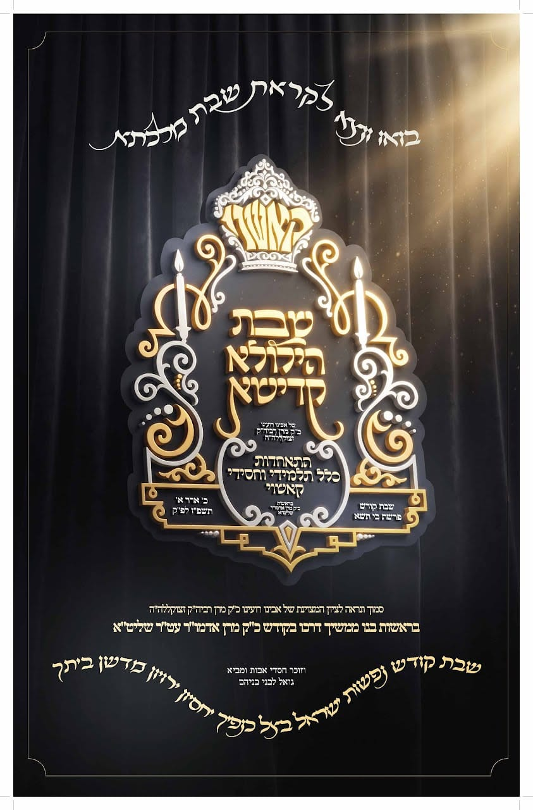

Parshas Ki Sisa · 20 Adar I 5787 · Gathering of all Kasho talmidim & chassidimפרשת כי תשא · כ׳ אדר א׳ תשפ״ז · התאחדות כלל תלמידי וחסידי קאשוי

בואו ונצא לקראת שבת מלכתא
שבת הילולא קדישא
של אבינו רועינו כ״ק מרן רביה״ק זצוקללה״ה
קאשוי
התאחדות כלל תלמידי וחסידי קאשוי
בראשות כ״ק מרן אדמו״ר שליט״א
שבת קודש פרשת כי תשא
כ׳ אדר א׳ תשפ״ז לפ״ק
סמוך ונראה לציון המצוינת של אבינו רועינו כ״ק מרן רביה״ק זצוקללה״ה
בראשות בנו ממשיך דרכו בקודש כ״ק מרן אדמו״ר עט״ר שליט״א
וזוכר חסדי אבות ומביא גואל לבני בניהם
שבת קודש נפשות ישראל בצל כנפיך יחסיון ירוין מדשן ביתך
| Location | Candle lightingליכט צינדןFriday, Feb 26פרייטאג, 26 פעב. | HavdalahהבדלהMotzei Shabbos, Feb 27מוצאי שבת, 27 פעב. | Rabbeinu Tamרבינו תם |
|---|---|---|---|
| Williamsburgוויליאמסבורג | 5:25 PM | 6:25 PM | 6:57 PM |
| Monseyמאנסי | 5:25 PM | 6:26 PM | 6:57 PM |
| Kiryas Joelקרית יואל | 5:25 PM | 6:26 PM | 6:57 PM |
Calendar times for:קאלענדאר זמנים פאר:
Candle lighting is 18 minutes before sunset. Havdalah is at nightfall (sun 8.5° below the horizon); Rabbeinu Tam is 72 minutes after sunset. Times are calculated by Hebcal.com — follow your Rav and your kehilla’s luach.ליכט צינדן איז 18 מינוט פאר שקיעה. הבדלה איז ביי צאת הכוכבים (8.5° אונטער דעם האריזאנט); רבינו תם איז 72 מינוט נאך שקיעה. די זמנים ווערן אויסגערעכנט דורך Hebcal.com — פירט זיך לויט אייער רב און דעם לוח פון אייער קהילה.